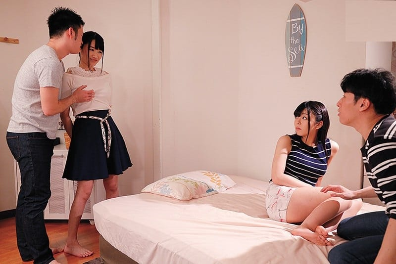

Truyện này là hư cấu thôi nhé các Bro, nhưng thú thật là lần cắm trại dã ngoại đó xém bị Swing vợ mình rồi, nay nhớ lại và thêm cảm xúc sáng tác tăng kích thích cho các bro đọc.
Hy vọng làm thỏa mãn trí tưởng tượng của anh em đồng dâm
Hằng và Hoa là hai bạn thân hồi đại học, cả nhóm bạn này Hoan đều biết nên cũng khá thân do đó khi Hoa rủ rê Hằng (vợ Hoan) cùng đi du lịch dã ngoại là chàng đồng ý ngay vì bản thân chàng cũng thích du lịch khám phá – tùy hứng. Còn Hoan trong lúc cua kéo Hằng nên cũng quen anh Phan (chồng Hoa) nên cả hai nhà đều không lạ nhau. Máu phượt của cả hai gia đình khá giống nhau nên khi rủ rê là cả hai nhanh chóng gât đầu & chuẩn bị sơ sài cho chuyến đi này.

Hai nhà hai xe ô tô – loại xe việt dã 2 cầu chạy off road nên rất cơ động và cũng chẳng cần book phòng trước vì đụng đâu nghỉ đó, đi siêu thị thì ở các thị xã / thành phố lớn bây giờ đều có Coop mart và lại có xe ô tô nên chỉ cần vài bộ đồ và ít nước ngọt, bánh trái dùng trong lúc lái xe đi từ điểm này qua điểm kia thôi. Vì đi tùy hứng nên cả hai nhà không đặt phòng trước, vả lại có xe ô tô nên đụng đâu là tìm khách sạn trong khu vực đó để ngủ, rất dễ dàng.
Hoan rủ anh Phan (vì anh Phan – chồng Hoa, lớn tuổi hơn nên Hoan gọi là anh) đi bán đảo Bình Ba, làng chài Bình Lập – Phan Rang tham quan bằng thuyền của ngư dân chơi. Họ cùng nhau vào làng chài, mướn thuyền đánh cá của ngư dân đi thuyền ra bãi hoang (dịch vụ này có lẽ giờ bị kiểm soát khá chặt do yếu tố an ninh sau khi Việt Nam lập hạm đội tàu ngầm– không biết nay có còn sử dụng được không). Một bãi biển khá hoang sơ ven biển Bình Lập (Phan Rang) khúc đối diện núi Chúa, vườn Quốc Gia Núi Chúa. Bãi này chỉ có thể tiếp cận bằng thuyền chứ bằng đường bộ thì chưa có đường. Cả nhóm lên thuyền cùng ông chủ thuyền và thằng con trai lớn đưa ra bãi tắm tự nhiên phía bên kia bán đảo – một bãi tắm hoang có thể nhìn thấy tỉnh lộ 702. Đàn ông thì dễ dàng vụ quần áo tắm do chỉ cần cởi áo & mặc sẵn quần bơi là xong chứ đàn bà con gái hơi khó khăn. Trong thuyền chỉ có khoang máy dưới boong thuyền khá nhỏ hẹp là nơi kín đáo nhất để Hoa và Hằng và 2 con gái nhỏ của 2 người xuống thay đồ tắm. Hai đứa nhỏ (4 & 6 tuổi) nên không khó khăn gì cho 2 bà mẹ thay đồ tắm cho 2 bé cả, thấp thoáng trên đầu là con trai ông chủ thuyền đứng cùng Hoan và anh Phan. Ông chủ thuyền thì ý tứ ra trước mũi thuyền thả neo & trông chừng các con sóng, tránh cho thuyền va vào đá ngầm đồng thời cũng tạo thỏa mái cho cánh đàn bà thay đồ tắm ở dưới khoang máy.
Hằng & Hoa đều hơi ngại, nhưng đến đây rồi mà không tắm biển thì phí lắm, vả lại trên kia còn có 2 ông xã nữa mà. Hằng cởi nhanh áo thun, vẫn mặc nguyên áo lót trong rồi tranh thủ mặc áo tắm loại liền thân vào. Hoa thì chẳng ngại ngùng gì cả vì là dân biển nên Hoa rất bạo dạn, Hoa cởi áo lót, mặc loại bikini vào rồi lên trên boong chính của thuyền. anh Phan thì có lẽ cố tình nhìn xuống khoang máy để thấy cảnh Hằng cởi áo thun ra, trời ơi da của con vợ nó trắng bóc. Cái áo lót trắng viền đăng ten ôm trọn bầu ngực tròn của Hằng và nhất là thao tác rướn người lột áo thun ra càng làm cho bầu vú vun lên cao cực khêu gợi. Móa ơi, nếu được bú liếm cái bầu vú này thì bảo anh Phan nhảy vào than hồng chàng cũng làm,….Rồi Hoa và Hằng cũng lên boong thuyền, ánh mắt của cánh đàn ông nhìn chằm chặp vào thân hình bốc lửa của 2 bà mẹ 1 con. Hoan thấy ánh mắt khác lạ của thằng con trai khoảng 17-18 tuổi của ông chủ thuyền, lâu lâu lại thấy anh chàng nuốt nước bọt ừng ực, mắt thì liếc nhìn bầu ngực của vợ mình vì so về da thì da Hằng trắng hơn da của Hoa dáng thì lại cao và rất cân đối. Hằng thì có làn da trắng kiểu dân văn phòng, bầu ngực vun cao sau làn áo bơi liền quần 1 mảnh, cái áo lót trong và lớp mút đệm của áo tắm làm cho bầu vú lại càng to nữa, nhìn là muốn cắn, muốn bú liếm rồi, vòng eo dù đã có 1 con nhưng do tập gym đều đặn nên khá nhỏ, lại càng tôn thêm vòng 3 bốc lửa của nàng. Hoa thì mặc bộ bikini cũng rất bắt mắt, làn da trắng hồng của dân văn phòng nổi bật trên nền áo tắm 2 mảnh của cô nàng, cặp giò dài miên man và khá săn chắc vì Hoa cũng khá siêng năng trong việc tập gym hàng ngày.
Cả nhóm nhảy tùm xuống biển tắm và chơi đùa thỏa thích vì cả bãi tắm hoang mênh mông chỉ có gia đình của hai nhà và cha con ông chủ thuyền. Hoan để ý thấy cặp mắt của cha con ông chủ thuyền lâu lâu lại nhìn về phía Hằng, về phía bầu ngực lấp ló dập dềnh theo mỗi cơn sóng,…
Rồi cả nhóm lấy hành lý và 2 lều dã ngoại lên trên bờ, hẹn hôm sau chủ thuyền sẽ chạy thuyền vòng lại đón cả nhà. Hằng mặc áo thun trắng mỏng, bên trong có áo lót nhưng do ngực Hằng quá căng nên nhìn kỹ vẫn thấy đầu vú hằn lên xuyên qua áo lót và nhô lên cả áo thun trắng. Hằng mặc quần jean xanh cộc – loại đi biển, cặp đùi dài miên man trắng không tì vết, bờ mông của gái một con vồng lên ôm trọn lấy phần sau của quần jean bó sát càng làm thân hình thêm gợi cảm. Cặp đùi này mà đẩy thì sướng phải biết – anh Phan thầm nghĩ và cứ dùng mắt mà hiếp dâm thân thể của Hằng. So với Hoa dân miền biển nên nước da không trắng bằng, vả lại do Hoa không biết giữ gìn nên thân thể sau sinh không được gọn cho lắm, vòng 2 đã bắt đầu ngấn mỡ rồi – đúng là văn mình vợ người mà. Hoan để ý thấy ông chủ thuyền và cả anh Phan cứ len lén nhìn bầu ngực với đầu vú cộm lên của Hằng và nuốt nước bọt liên tục… Càng kích thích chứ sao, Hoan nghĩ, đêm nay phải cho bả biết tay, cái tật đi khoe hàng cho thiên hạ.
Hoan hồi tưởng lại hồi mới ra trường, Hằng đi làm mặc áo trắng đồng phục – loại áo cài cúc nên cúc áo khá thưa, bầu vú cộng thêm áo lót nữa làm cho phần da thịt của khoảng ngực he hé lộ ra trắng toát nhìn rất thèm thuồng và làm biết bao ánh mắt thèm thuồng trong cơ quan nhìn theo, có lẽ buổi trưa ở canteen khối kẻ không cần ăn trưa mà nước dãi nhỏ đầy bát cơm,…Vì Hằng kể sếp mới của cô làm cả bài thơ tặng cô, mỗi buổi trưa thì cố gắng chờ nàng xong việc để có thể ăn trưa cùng,…
Cả hai gia đình lên tráng sơ nước ngọt ở gần con suối cạn gần bờ biển rồi ăn tối và chăng lều dã ngoại mang theo nghỉ. Hai anh em hợp ý nên trò chuyện rất khuya, lúc này cả hai bà vợ đã đi ngủ với con ở lều của mỗi nhà rồi, câu chuyện giữa hai người đàn ông rồi cũng đến lúc nói về khoản đó.,…câu chuyện rôm rả & hai ông làm hết cả chai đế Bàu Đá đặc sản mà anh Phan mang theo. Hoan cũng không ngờ là mình lại có thể uống nhiều đến thế. Đêm biển tĩnh mịch cả hai ông uống quá chén nên chếnh choáng đi vệ sinh rồi vào nhầm lều của nhau (không biết do vô tình hay cố ý Hoan vào nhầm lều của nhà anh Phan còn anh Phan thì lại vào lều của Hoan,..). Sẵn có hơi men nên đụng là chén luôn, hai bà vợ thì sợ con thức giấc nên cũng nằm im chịu đựng.
Trong lúc say say, tỉnh tỉnh Hoan mò vào trong lều, lặng lẽ bế đứa con nằm gọn vào góc lều rồi nhẹ nhàng nằm cạnh thân hình đàn bà trong lều, chàng khẽ lần tay vào bầu ngực rồi bóp nhẹ, miệng thì mân mê bầu ngực bên kia qua làn áo mỏng. Thói quen làm tình của Hoan là phải sờ bóp rồi bú mút vú vợ chán chê rồi mới đút cu vào trong lồn mà giã. Tay chàng luồn vào trong áo của nàng khẽ vén áo qua bầu ngực cho chàng dễ hoạt động cả tay và miệng. Tay chàng luồn vào trong áo lót rồi đẩy cái áo lót lên phía trên cho khỏi vướng víu. Do buồn ngủ và cũng nghĩ là chồng mình nên Hoa chỉ rên khẽ rồi rướn tay ra phía sau cởi khuy áo ngực, xong xuôi nàng dùng tay xoa đầu của người đàn ông đang bú mút đầu vú của mình. Hoan thì vẫn mê mải bú mút bầu vú của con đàn bà dưới bóng tối mờ mờ nên chàng cũng vẫn nghĩ là vợ mình ở đúng lều của mình. Tay chàng bắt đầu mò xuống phần dưới mò mẫm khu tam giác vàng qua làn vải quần. Chàng hơi giật mình vì nhớ là vợ chàng hồi chiều mặc quần jean nhưng sao giờ lại là loại quần thun giả jean & quần lót. Nhưng thôi kệ, miễn có cái lồn mà sờ nắn mà thưởng thức khi tâm trạng nửa tỉnh nửa say thế này cho đã đời. rồi tay chàng thò vào trong phần cửa mình dùng ngón giữa đâm thọc vào trong lồn của con đàn bà. Cái quần vẫn cứ bị vướng do phần quần vướng vào cổ tay nên chàng tuột luôn cả quần mình và quần của người đàn bà trong bóng tối mờ ào của căn lều. Khi có tiếng nhem nhép do phần nước nơi cửa mình đã bắt đầu ra thì chàng lặng lẽ leo lên đút thằng nhỏ vào trong con bé đang ướt nhẹp vì nước dâm thủy đã ra do bị tay của đàn ông kích thích. Nhưng khi đã đút cu vào trong rồi nhưng sao thấy hôm nay vợ mình quái lạ, lồn hơi bị bót mà vú lại hơi nhỏ hơn ngày thường, hơi bừng tỉnh Hoan ngửi mùi cơ thể thì đúng là không phải, nhưng mà lỡ rồi – đút & nhịp luôn chứ sao. Giờ này bên kia anh Phan chắc cũng đang hưởng kèo thơm rồi. …Hoan chặc lưỡi rồi nhịp tiếp, tay tì luôn lên vai của bà xã a Phan rồi lấy đà nhắp, với thế này thì thằng nhỏ sẽ đi sâu hơn vào tử cung của người phụ nữ. miệng Hoan thỉnh thoảng lại chồm lên bầu vú mà mút, mà nhay nhay,…Kiểu này dân trên mạng gọi là Swing !!!! Hay trao đổi bạn tình lẫn nhau đó mà.
—– Còn tiếp—–